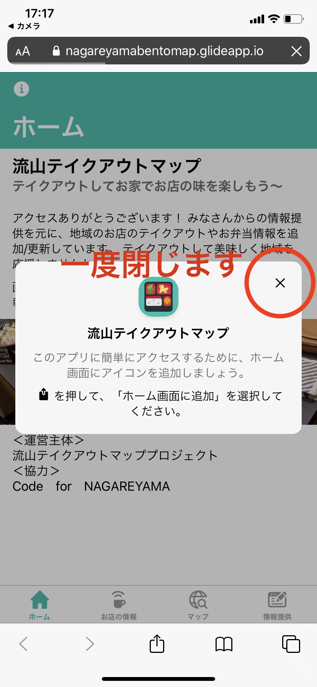
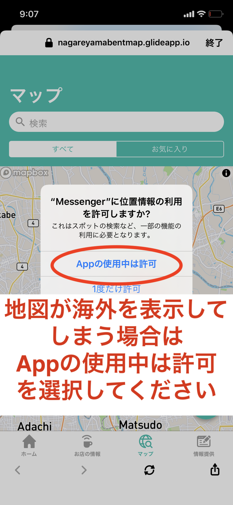

<ons-page id="setting-page">
    <ons-list>
        <ons-list-header>投稿する</ons-list-header>

        <ons-list-item expandable>
            投稿されたお店をみる
            <div class="expandable-content">
                <ol style="list-style-type: upper-roman">
                    <li>お店を探す機能</li>
                        <ul>
                            <li>一覧からお店を探す</li>
                            <li>検索機能を探す</li>
                        </ul>
                    <li>マップ機能</li>
                    <ul>
                        <li>マークをクリックする</li>
                    </ul>
                </ol>
            </div>
        </ons-list-item>

        <ons-list-item expandable>
            お店の登録方法
            <div class="expandable-content">
                画面右下の投稿する画面の（＋）ボタンから、お店の情報が掲載できます！
            </div>
        </ons-list-item>

        <ons-list-item expandable>
            アプリの登録方法
            <div class="expandable-content">
                <div class="center">
                    
                </div>
            </div>
        </ons-list-item>

        <ons-list-item expandable>
            ＜利用に関する注意＞
            <div class="expandable-content">
                <ul style="list-style-type: disc">
                    <li>最新のお店の情報は、ホームやSNSでが確認ください。</li>
                    <li>情報提供にご協力いただける場合は、掲載店から了承をいただくことが望ましいです。</li>
                    <li>本サイトの利用で被害等があった場合でも、運営主体および協力団体は責任を負えませんのでご了承ください。</li>
                    <li>無料ツールをしての運用のため、動作に関するサポートは行えません。</li>
                    <li>環境により動作しない場合も報告さてていますが、別のブラウザやスマートフォン等にてご確認ください。</li>
                </ul>
            </div>
        </ons-list-item>

        <ons-list-item expandable>
            ＜目的＞
            <div class="expandable-content">
                現在、新型コロナウィルス対策により不要不急の外出自粛となっています。<br>
                それを受けて地域の飲食店では、お弁当やテイクアウトメニュー販売するところが増えています。<br>
                その情報をみんなでシェアして地域応援、そして外出自粛のおうちの中で少しでも楽しくという思いを込めて、急いでアプリをつくって、みました。<br>
                <br>
                ※この活動は市民有志ボランティアで行っています、
            </div>
        </ons-list-item>

        <ons-list-item expandable>
            ＜外出について＞
            <div class="expandable-content">
                国、千葉県、流山市の外出に関する情報に則ってください。
            </div>
        </ons-list-item>

        <ons-list-item expandable>
            ＜よくある質問＞
            <div class="expandable-content">
                <p>
                    Q.流山市内の店しかのせられないのですか？<br>
                    A.流山市民の方がアクセスしやすいお店ならどこでも結構です！（松戸、柏、野田など）
                </p>
                <p>
                    Q.記載内容を修正したい場合はどうすればよいですか？<br>
                    A.ありがとうございます、メールでご連絡ください。<br>
                    <a href="mailto:codefornagareyama@gmail.com?subject=流山テイクアウトマップ&amp;body=修正依頼">お問合せ先： codefornagareyama@gmail.com</a>
                </p>
                <p>
                    Q.投稿した内容が反映されません。<br>
                    A.住所がきちんと反映されるかなどメンバーで確認をした後の上げております。1日程度お待ちください。
                </p>
            </div>
        </ons-list-item>

        <ons-list-item expandable>
            ■地図が海外の場所を表示する場合
            <div class="expandable-content">
                <div class="center">
                    
                </div>
            </div>
        </ons-list-item>

    </ons-list>
</ons-page>
